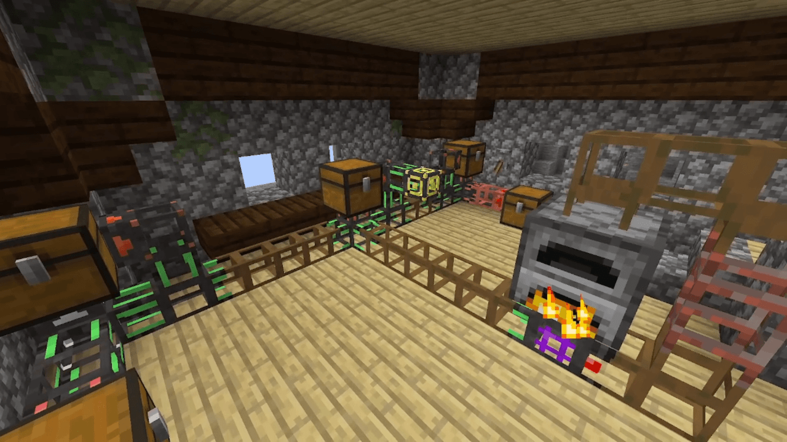
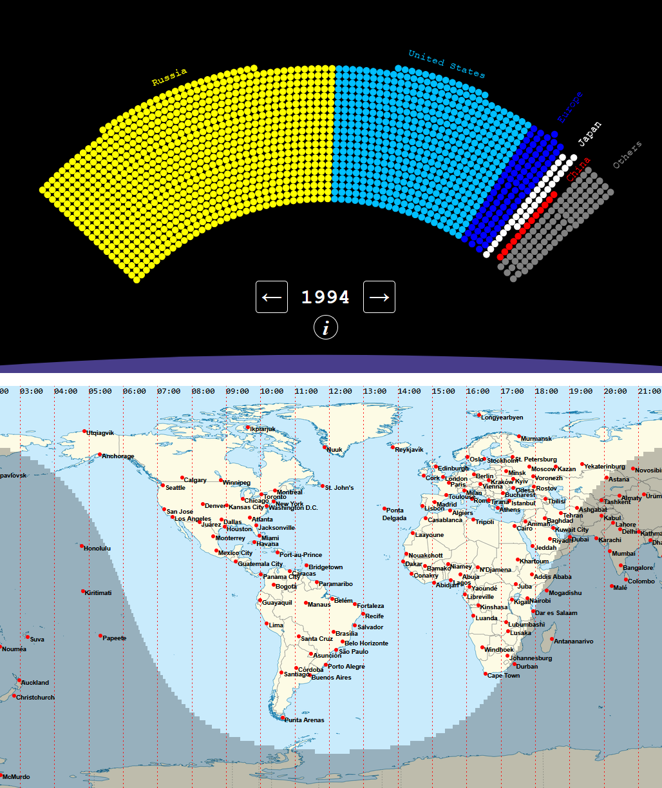

Jack Mullin
computer scientist and designer
computer scientist and designer

Mods are unofficial addons for the game Minecraft, written in the Java programming language. Java was my first programming language and I have been making mods since I was 13 years old. Over that time, I have developed my skills both as a Java developer and as a game designer.
My biggest mod to date is Classic Pipes, with over 2.5 million downloads, which implements an entire logistics system into the game for transporting and processing items. You can find the code for it on Github.

I have designed websites with a focus on data visualisation, such as Space Clutter, a visualisation of the number of satellites in orbit around Earth, and Geochron, a web re-creation of a type of world map for diplaying solar time and seasonal variation of day-length at different points on the planet.
My first website was a (now defunct) fansite for the cartoon Adventure Time, called ATChronology, that I created as a teenager and maintained from 2017 to 2023. The website was cited in an official video published by the production studio that made Adventure Time, and in 2020 I was interviewed about the site for the non-fiction book Exploring the Land of Ooo (Paul Thomas, Kansas University Press).
For professional queries please email jack.a.g.mullin@outlook.com. I am currently looking for work and my CV is available on request.
I am also on LinkedIn.